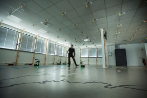
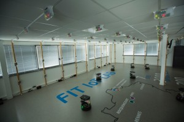
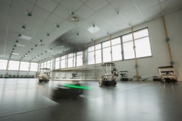

LILLE
lille.iot-lab.info m3 firefly microbit samr21 st-lrwan1 robots
On the Lille site, the nodes are deployed in our two buidlings at Inria Lille – Nord Europe. The most part is spread across the A building, usefull for large network and multi-hop experimentations. An additionnal part is deployed in a structure called Le Cube, in the B building, with a variety of boards.
Resources
- In the A building:
- 256 fixed + 3 mobile M3 open nodes
- 11 Zolertia Firefly
- A set of different boards in Le Cube:
- 5 Atmel SAMR21 Xplained Pro
- 5 BBC micro:bit
- 5 M3
- 5 ST B-L072Z-LRWAN1
- 5 Zolertia Firefly
Topology in the A Building
Lille testbed is deployed at a building scale, over the three floors of our Inria building, through offices, corridors, meeting or storage rooms, in addition to a dedicated room. The deployment zones over the building are marked in blue in the figure above. See the video below to visit the deployment across the building.
The dedicated room is a 225 m2 area, composed of a corridor separating a big room and 5 offices (respectively on left and right in topology figures). In this room, nodes are dispatched over the ceiling and wood poles, situated at the borders of the big room.
- Nodes on ceiling are dispatched in staggered rows over a 1.20 m x 1.20 m grid, at an overall high of 9.6 m.
- Nodes on poles are vertically hanged at an overall high of 7.60, 8.50 and 9.40 m.
- The floor is dedicated to a fleet of robots providing mobile nodes.
Here is the dispatch regarding node’s ids:
- Ground floor: m3-[1-45], firefly-[1-3]
- First floor: m3-[46-111], firefly-[4-6]
- Second floor: m3-[112-129], firefly-[7-8]
- Dedicated room (2nd floor): m3-[130-256], firefly[9-11]
{kind=link}
{kind=link}
  
© Inria / Photo C. Morel
{kind=link}
{kind=link}
{kind=link}
Le Cube
There is an additional deployment in the B building, around 100 m from the other one, in a wooden structure called Le Cube. It’s purpose, here, is not to experiment at a large scale, but rather to test network solutions, protocols or Operating Systems over different hardwares and radios. This deployment brings a practical way to experiment compatibility and interoperability scenarios.
{kind=link}
{kind=link}
{kind=link}
Header picture by Camster2 (Own work) [GFDL or CC-BY-SA-3.0-2.5-2.0-1.0], via Wikimedia Commons
{kind=link}